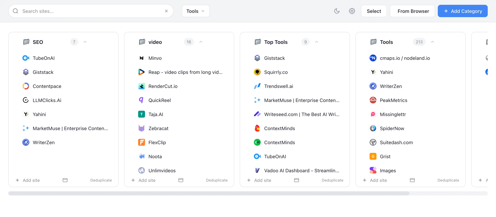
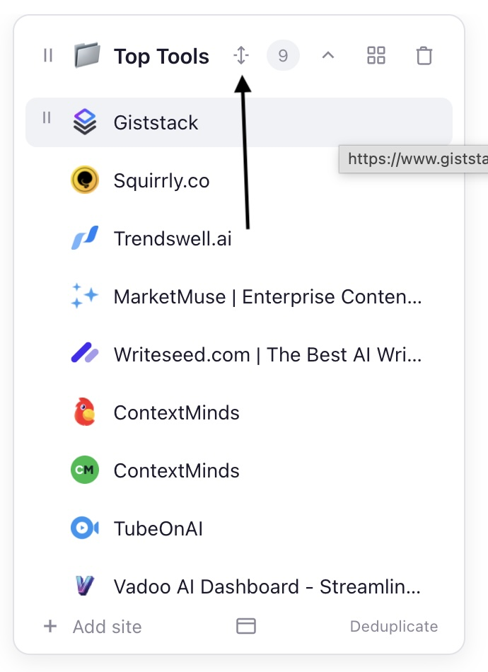
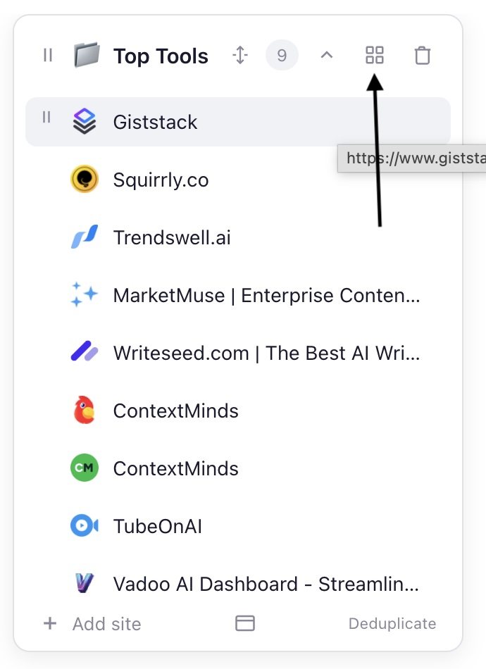
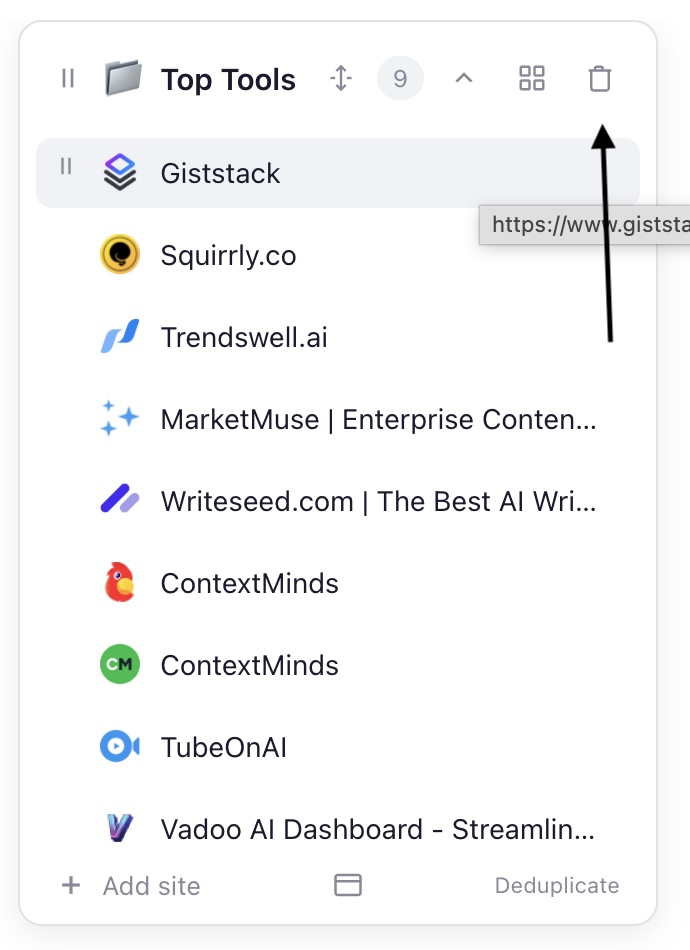
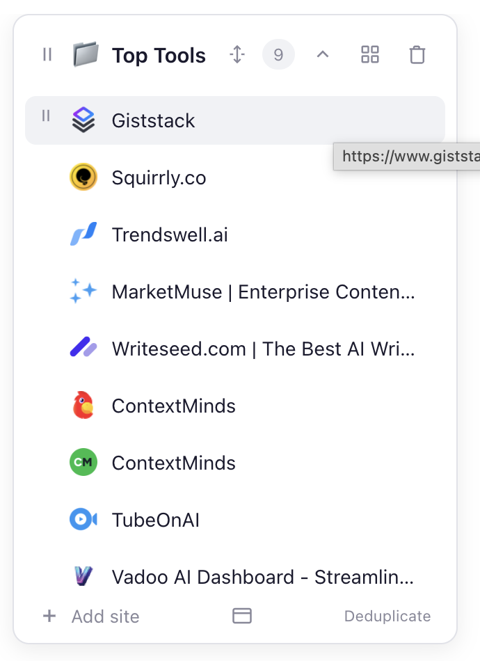
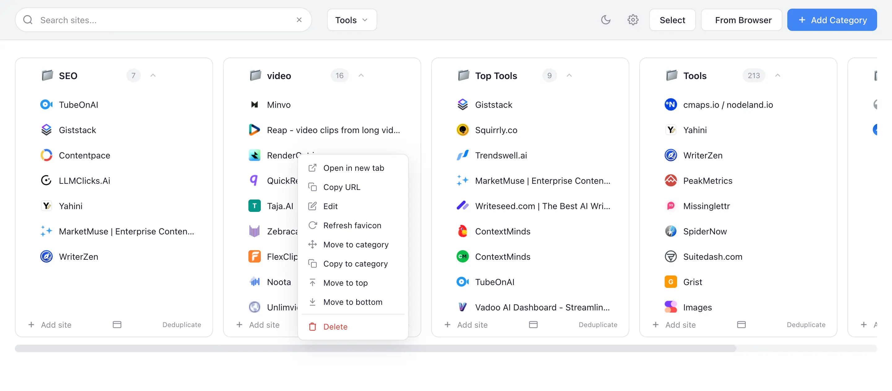
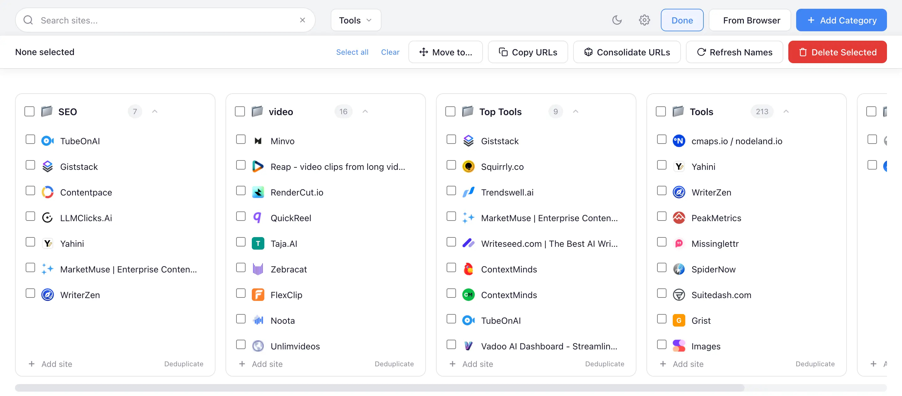
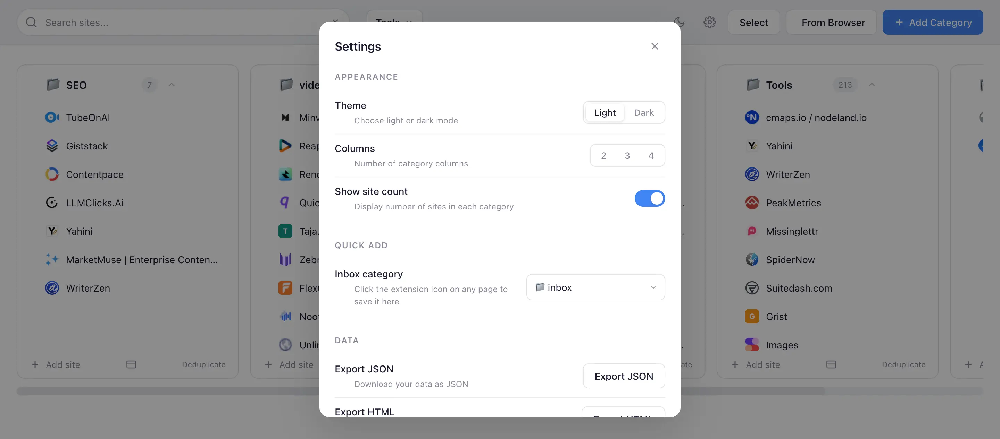

Overview
Tab Manager Pro replaces your browser's new-tab page with a powerful, customizable dashboard. Organize your favorite sites into categories displayed as a Kanban-style column layout, group categories into workspaces, and quickly access everything with search, keyboard shortcuts, and bulk operations.
The extension works on Chrome (and Chromium-based browsers like Edge and Brave) on both macOS and Windows.

Header & Controls
The header bar across the top of the page contains the primary controls for navigating and managing your dashboard.
Search
Type in the search box to instantly filter sites across all categories and workspaces. Matches against site names, URLs, note text, and category names. When a category name matches, all of its sites are shown. Only matching sites and their categories will be displayed.
.jpg)
Workspace Selector
Click the workspace name (e.g., "Tools") to open a dropdown where you can switch between workspaces, create new ones, rename, duplicate, or delete them.
.jpg)
Theme Toggle
Click the sun/moon icon to switch between light and dark mode. Your preference is saved automatically.
Settings
Click the gear icon to open the Settings modal, where you can configure appearance, Quick Add inbox, and data export/import.
.jpg)
Select Button
Click Select to enter selection mode, which enables bulk operations on multiple sites at once.
.jpg)
Bird’s-Eye View Toggle
Click the stacked-rectangles icon (between the workspace selector and the header actions) to toggle Bird’s-Eye View. This shows all workspaces stacked vertically on one page. See the Bird’s-Eye View section for full details.
Save All Open Tabs
Click the floppy-disk icon to save all currently open browser tabs into a brand-new category. Tab Manager Pro creates the category automatically, names it with a timestamp, and populates it with every open tab’s URL and title. This is a quick way to snapshot your browsing session.
From Browser
Click From Browser to import sites from your currently open tabs or your Chrome bookmarks.
.jpg)
+ Add Category
Click this button to create a new category in the current workspace.
.jpg)
Categories
Categories are the vertical columns that contain your saved sites. Each category has a header, a list of sites, and a footer with actions.
Category Header
The category header shows a collapse/expand chevron, the category name, and a site count badge. Hover over the header to reveal additional controls.
Collapse / Expand
Click the chevron arrow at the left of the header to collapse a category, hiding its site list, footer, and "go to" link while keeping the header visible. Click again to expand. This is useful for reducing clutter when you have many categories. The collapsed state is saved automatically.
.jpg)
.jpg)
.jpg)
Header Controls (visible on hover)
When you hover over a category header, additional controls appear:
- Drag handle (vertical dots) — Drag to reorder categories within the workspace.
- Sort icon (up/down arrows) — Sort the sites in this category alphabetically.
- Grid view icon (four squares) — Toggle between list view and grid/tile view for the category.
- Delete icon (trash can) — Delete the entire category and all its sites.



Category Footer
At the bottom of each category column, you'll find these actions:
.jpg)
.jpg)
.jpg)
Adding a New Category
Click + Add Category in the header to open the Add Category dialog. Enter a name and optionally choose an icon.
.jpg)
Sites
Each site entry in a category displays a favicon and the site name. Sites are clickable — clicking one opens it in a new tab.
.jpg)
Hovering Over a Site
When you hover over a site, a tooltip shows the full URL. You can also see a drag handle on the left side for reordering via drag and drop.

Notes
Sites can have text notes attached to them. If a site has a note, a truncated preview appears below the site name in a smaller font. Click the preview to expand it and see the full note. Click again to collapse.
You can also create standalone note tiles (without a URL) by entering only text in the "Add site" dialog without providing a URL.
Adding Sites
There are several ways to add sites to a category:
- + Add site — Click this at the bottom of any category to manually enter one or more URLs (one per line).
- From Browser — Import from your open tabs or bookmarks (see Add from Browser).
- Quick Add (extension icon) — Click the Tab Manager Pro icon in your browser toolbar while on any page to save it to your designated inbox category.
- Drag and drop — Drag sites between categories to reorganize them.
Right-Click Context Menu
Right-click on any site to access a full context menu with the following options:

- Open in new tab — Opens the site URL in a new browser tab.
- Copy URL — Copies the site URL to your clipboard.
- Edit — Opens the edit dialog to change the site's name, URL, or note.
- Refresh favicon — Re-fetches the site's favicon icon.
- Move to category — Opens a submenu to move the site to a different category.
- Copy to category — Opens a submenu to copy (duplicate) the site into another category.
- Move to top — Moves the site to the first position in the category.
- Move to bottom — Moves the site to the last position in the category.
- Delete — Removes the site from the category.
Move / Copy Submenu
When you choose "Move to category" or "Copy to category", a submenu appears listing all categories with Top and Bottom buttons to control where the site is placed. A Move / Copy radio toggle at the top lets you switch between the two modes.
.jpg)
Select Mode
Click the Select button in the header to enter selection mode. Checkboxes appear next to every site and category, letting you select items for bulk operations.

Selection Toolbar
The toolbar at the top provides these actions:
- Select all / Clear — Select or deselect all sites in the current workspace.
- Move to... — Move selected sites to a different category (with a Move/Copy radio toggle).
- Copy URLs — Copy all selected sites' URLs to your clipboard, one per line.
- Consolidate URLs — Merge duplicate URLs across categories.
- Refresh Names — Re-fetch page titles for all selected sites.
- Fetch Descriptions — Fetch meta descriptions from the web for all selected sites and store them as notes.
- Delete Selected — Delete all selected sites.
Move To Menu (from Select Mode)
When you click "Move to..." with items selected, the Move menu appears with Move/Copy radio buttons at the top, followed by the list of destination categories.
.jpg)
Click Done in the top-right corner to exit selection mode.
↑ back to topWorkspaces
Workspaces let you organize categories into separate groups. Think of them as different dashboards — for example, you might have a "Work" workspace and a "Personal" workspace.
Switching Workspaces
Click the workspace name in the header to open the workspace dropdown. Click any workspace name to switch to it.
Managing Workspaces
The workspace dropdown provides these actions for each workspace:
- Rename — Click the pencil icon to rename a workspace.
- Duplicate — Click the copy icon to create a duplicate of the workspace (with a "+" suffix). All categories and sites are deep-copied with unique IDs.
- Delete — Click the trash icon to delete a workspace.
Use the + New Workspace option at the bottom of the dropdown to create a new workspace.
Moving Categories Between Workspaces
In the workspace dropdown, you can also move or copy entire categories to a different workspace using the Move/Copy toggle, similar to moving individual sites.
↑ back to topAdd from Browser
Click From Browser in the header to open the "Add from Browser" dialog. This lets you quickly import sites from two sources:
Open Tabs
The Open Tabs tab shows all tabs currently open in your browser. Check the ones you want to add, choose a destination category from the dropdown, and click Add Selected.

Bookmarks
The Bookmarks tab shows your Chrome bookmarks. You can filter by bookmark folder, search by name, and select individual bookmarks to import.
.jpg)
Toolbar Controls
- Filter — Type to search within the displayed tabs or bookmarks.
- Enable saved — Show/hide sites that are already saved in your categories.
- Select all / Clear — Quickly select or deselect all visible items.
- Add to dropdown — Choose which category to add the selected sites to.
Settings
Click the gear icon in the header to open the Settings panel. It is divided into several sections:
Appearance

- Theme — Choose between Light and Dark mode.
- Columns — Set the number of category columns displayed (2, 3, or 4).
- Show site count — Toggle the site count badges on/off in category headers.
Quick Add
- Inbox category — Choose which category receives sites when you click the extension icon in the browser toolbar. This provides a one-click way to save the current page.
Data
- Export JSON — Download all your data (workspaces, categories, sites) as a JSON file for backup.
- Export HTML — Download a readable HTML page of all your saved sites.
- Import — Restore data from a previously exported JSON backup.
- Reset — Clear all data and start fresh. Use with caution!
Copy All URLs
- Copy All URLs — Toggle this on to show a "Copy All" button in the settings that copies every URL from the current workspace to your clipboard.
Tab Splitter
Controls for the automatic tab-splitting feature, which breaks overcrowded browser windows into smaller ones. (This is separate from the Split button in Live Tabs, which measures the fit to your screen automatically.)
- Max tabs per window — Windows with more tabs than this number (3–50, default 12) are split.
- Auto-split on new tabs — When on, opening a tab that pushes a window past the limit automatically splits it.
- Split Now — Manually split the current window using the number above.
Test Mode
- Enable test mode — Adds a Combine button next to Split in Live Tabs that merges every open window into one. It is meant for trying out the splitter (combine everything into one window, then Split it back into tidy columns). Leave this off for normal use. See Live Tabs.
Bird’s-Eye View
Bird’s-Eye View shows all workspaces stacked vertically on a single page. Each workspace appears as a labelled section with its own horizontal row of category cards. This is ideal for getting a panoramic overview of everything, especially on large screens.
Activating Bird’s-Eye View
Click the stacked-rectangles icon in the header (between the workspace selector and the theme toggle). The icon highlights when the mode is active. Click again to return to the normal single-workspace view.
Workspace Sections
Each workspace becomes a collapsible section with a header showing the workspace name and category count:
- Click the workspace header to collapse or expand that section.
- Click anywhere inside a workspace section to set it as the active workspace. The active workspace’s name is highlighted in the accent colour and is the target for keyboard shortcuts like Option + ← / →.
Navigation in Bird’s-Eye View
- Option + 1–9 scrolls to workspace 1–9 and sets it active (instead of switching).
- Option + 0 scrolls to the inbox category and flash-highlights it.
- Option + ↑ / ↓ moves the active workspace indicator up or down and scrolls to it.
- Option + ← / → scrolls the active workspace’s category row horizontally.
- Clicking a workspace in the workspace selector dropdown scrolls to that section (instead of switching).
Search in Bird’s-Eye View
While searching, Bird’s-Eye View temporarily switches to a flat cross-workspace results list. When you clear the search, the stacked view is restored.
Live Tabs
Live Tabs is a special workspace that mirrors your open browser windows and tabs in real time, instead of your saved sites. Each open window becomes a card (a column), and each tab inside it becomes a tile showing the page title and domain. It updates automatically as you open, close, move, and switch tabs.
Unlike your regular workspaces, Live Tabs is a live view. Nothing here is saved to your data. It is a control panel for the tabs you have open right now.
Opening Live Tabs
Open the workspace selector in the header and choose Live Tabs (it always appears last in the list). To leave, pick any normal workspace from the same dropdown.
Reading the Cards
- Each window is a card. The card title is generated from the most common sites in that window (for example, "YouTube, Gmail & 5 more"), and the badge shows how many tabs it holds.
- The currently focused window is marked with a green dot and an accent-coloured edge.
- The active tab in each window is highlighted, and pinned tabs are marked as pinned.
Working with Tabs
- Click a tile to jump straight to that tab (its window comes forward and the tab becomes active).
- Hover a tile and click the × to close that tab.
- Drag a tile to reorder it within its window, or drag it onto another window’s card to move it there.
- Drag a tile onto one of your saved categories (switch workspaces first) to save that tab as a bookmark.
- Right-click a tile for the full menu: switch to tab, close tab, move or copy to another window, move to top/bottom, pin/unpin, open in a new tab, and copy the URL.
Working with Windows
- Each window card has a focus button in its header to bring that window forward.
- Right-click a window’s header for window actions: focus the window, open a new window, merge this window’s tabs into another window, or close the window.
- The dashed New Window card at the far end opens a fresh, empty browser window.
Select Mode in Live Tabs
The Select button works here too, but with tab-specific actions. Choose multiple tabs, then Close Selected Tabs to close them all at once, or Save to Category to bookmark them into one of your categories.
Search in Live Tabs
While you are on Live Tabs, the search box filters your open tabs (not your saved sites), so you can quickly find a tab among many windows.
Split — Fit Windows to Your Screen
A Split button appears just to the right of the workspace selector, only while you are on Live Tabs. It takes every window that has more tabs than comfortably fit on screen and splits it into several smaller windows, so each column can be seen without scrolling.
- The target size is measured to your screen. It works out how many tiles fit a column at your current window height, so taller displays keep more tabs per window and smaller ones keep fewer. There is no number to set.
- Windows are balanced when they split (for example a very full window becomes two or three evenly sized windows), so you never end up with a stray window holding a single tab.
- The dashboard stays in front. New windows open in the background and the Tab Manager window is brought back to the front, so you watch the new columns appear right where you are.
- If everything already fits, Split does nothing and briefly shows "Nothing to split". Windows that are already small enough are left alone.
Combine (Test Mode)
When Test Mode is turned on in Settings, a Combine button appears next to Split. It merges every open window into a single window. It exists mainly to try out Split: click Combine to gather everything into one crowded window, then Split to fan it back out into tidy columns.
Keyboard Shortcuts
Tab Manager Pro supports keyboard shortcuts for quick navigation:
| Shortcut | Action |
|---|---|
| Option + 1–9 | Switch to workspace 1–9 (in Bird’s-Eye View: scroll to workspace) |
| Cmd + Option + 1–9 | Switch to workspace 1–9 (alternative) |
| Option + 0 | Jump to inbox category (scrolls and flash-highlights) |
| Option + ↑ / ↓ | Move active workspace up/down (Bird’s-Eye View); switch workspace (normal) |
| Option + ← / → | Scroll categories horizontally in the active workspace |
| / or Cmd + K | Focus the search bar |
| Cmd + Z | Undo last destructive operation (delete, move, reorder) |
| Escape | Clear search / exit select mode / close dialogs |
On Windows, use Alt instead of Option and Ctrl instead of Cmd.
↑ back to top